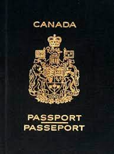

Un Nouveau Départ
La ville de Lévis est le principal pôle urbain, économique et institutionnel de la région de Chaudière-Appalaches. Elle fait partie de la Région métropolitaine de Québec et est liée à la ville de Québec par le pont de Québec et le pont Pierre-Laporte ainsi que par un service de traversiers. Le territoire de la ville est sillonné par trois rivières – la Chaudière, l’Etchemin et la Beaurivage, ainsi que par de nombreux ruisseaux. La population de Lévis est d’environ 130 mille habitants et son territoire est formé de 444 km carrés, dont 10 % sont urbanisés et le reste sont des terres cultivées, sous couvert forestier ou dans des milieux humides. La nouvelle ville de Lévis qui a pris la relève des administrations municipales antérieures a été fondée en 2002, issue du regroupement de dix municipalités et de deux MRC. Aujourd’hui, la ville compte trois arrondissements. Elle possède onze bibliothèques, onze piscines extérieures et deux piscines intérieures, un centre de ski alpin, des chalets de parc, presque deux cents kilomètres de réseau cyclable, près de 1000 kilomètres de rues et de routes..
Mais la ville de Lévis a été à l’origine de la Nouvelle-France, fondée depuis plus de trois cents ans quand elle assurait le peuplement et la mise en valeur des vastes étendues des territoires au delà du Saint-Laurent. Avant même l’arrivée des Européens, les premiers habitants s’y installèrent depuis près de 10 000 ans. De nombreux sites archéologiques témoignent de la présence des Amérindiens de diverses cultures dans ces lieux environnant les rivières Chaudière et Etchemin et des artefacts retrouvés ici illustrent une riche présence amérindienne. Tout semble indiquer que la région de Lévis fut le centre du peuplement initial du Québec.
À Lévis habite plus du tiers de la population de la Région administrative de Chaudière-Appalaches et la moitié de l’activité économique de la région s’y concentre. Lévis constitue donc le principal pôle de développement économique et urbain de la région Chaudière-Appalaches et joue un rôle stimulant. Grâce à l’importance de son secteur manufacturier ainsi qu’à la présence de grandes institutions financières sur son territoire, la ville joue un rôle important au niveau du Québec. Le taux de chômage de la population est faible, Lévis est donc un milieu actif et intéressant comme possible lieu de résidence des nouveaux arrivants. À propos, le territoire de Lévis, traversé par l’autoroute Jean-Lesage, le chemin de fer transcontinental et baigné par le Saint-Laurent, constitue un lieu idéal d’accès aux marchés canadien et américain. Dans les secteurs manufacturiers de l’industrie lévisienne, on retrouve des compagnies très connues, telles que Frito-Lay Canada, le Groupe Brochu (maintenant Olymel), Ultramar ltée, Teknion/Roy et Breton, et d’autres. La ville de Lévis est active dans le développement de la nouvelle économie, notamment dans le domaine des agro-biotechnologies, dans les secteurs des aliments fonctionnels, de l’environnement. De nous jours, Lévis se tourne vers les hautes technologies et l’innovation. Les entreprises ont entrepris un virage dans cette direction avec des applications nouvelles comme la modélisation en trois dimensions, les nutraceutiques et les biotechnologies. En 2005, la Ville de Lévis s’est vue décerner le prix de «Ville de l’année» par la Revue Commerce et la Fédération des chambres de commerce du Québec grâce à son dynamisme exceptionnel sur les plans économique, environnemental, financier et culturel. Notons aussi que situé non loin de Charny, ce quartier de Lévis, le parc des Chutes-de-la-Chaudière offre 2,2 kilomètres de sentiers pédestres et 1,5 kilomètre de pistes cyclables au coeur d’un site naturel grandiose. Le parc propose plusieurs aires de pique-nique, des belvédères avec la possibilité d’admirer la chute sous différents angles, ainsi qu’une passerelle suspendue au-dessus de la rivière. Diverses activités émanent du centre d’interprétation, ouvert de juin à septembre. Le parc et ses aires de stationnement sont accessibles gratuitement toute l’année.